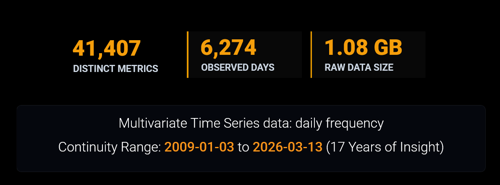

We are a team of 4 Master of Data Science students from the University of British Columbia who are passionate about Bitcoin and Financial markets.
The challenge of investing in Bitcoin is simple to describe but difficult to solve: if you have a fixed amount of money to invest over time, can you consistently buy more Bitcoin by adjusting your purchases based on market conditions, rather than investing the same amount every day?
Photo by Shruti Sasi
This project, built in partnership with the Trilemma Foundation, aims to evaluate whether public Bitcoin market and on-chain data can be leveraged to improve long-term accumulation compared to a uniform Dollar-Cost Averaging (DCA) approach, which serves as our primary baseline strategy.
The goal is to improve long-term accumulation efficiency by acquiring more Bitcoin with the same fixed budget. We measure this using Sats per Dollar (SPD), which represents the amount of Bitcoin or satoshis (Sats) accumulated per dollar invested. Using the BRK metrics dataset from the StackSats ecosystem, which contains daily market and on-chain metrics from 2009 to 2026, we analyze 41,000+ metrics, apply feature selection, and backtest adaptive allocation strategies against uniform DCA.
The Challenge with Uniform DCA
Long-term Bitcoin accumulation is important for institutions and foundations building Bitcoin exposure. The industry standard approach is Dollar-Cost Averaging (DCA), where a fixed amount is invested regularly. We use uniform DCA as our baseline because it provides significant psychological and operational benefits: it reduces emotional decision-making and minimizes the impact of poor market timing by smoothing out short-term volatility (Adam Hayes, 2026).
However, a strictly passive DCA strategy lacks the capacity for dynamic portfolio management. By ignoring changing market environments, it suffers from severe capital inefficiency when applied to a highly cyclical asset like Bitcoin. Because it deploys capital evenly regardless of asset valuation, it forces an institution to allocate the same fixed dollar amount during periods of severe market overvaluation as it does during prolonged historical drawdowns. Bitcoin frequently experiences severe bear markets where prices drop by more than 70%. While uniform DCA successfully averages out daily volatility, it fails to capitalize on Bitcoin’s massive market swings. An adaptive strategy that accelerates purchases during deep market crashes, and conserves cash during hype bubbles, will achieve a significantly lower average cost than uniform DCA over the long run (Adam Hayes, 2026). For institutions with strictly fixed budgets, using data-driven adaptation to beat this uniform baseline is critical to maximizing long-term accumulation.
Our Approach: Adaptive DCA
Our objective is to develop an adaptive daily allocation model. Instead of fixed purchases, our strategy adjusts its allocations dynamically based on public on-chain and market signals.
We measure our success using Average accumulated Sats per Dollar (SPD). Our goal is to systematically maximize the amount of Bitcoin (or satoshis) we accumulate per dollar invested while adhering to strict validation checks (to prevent look-ahead bias and floating-point drift).
Key Data & Signals
We are leveraging the open-source BRK dataset from the StackSats ecosystem. This rich dataset provides over 41,000 distinct daily metrics stretching back to 2009.

Our strategy explores key on-chain indicators known to historically signal favorable accumulation windows, such as:
- MVRV (Market Value to Realized Value): Identifies when the market price dips below the aggregate cost basis.
- NUPL (Net Unrealized Profit/Loss): Highlights periods when the majority of holders are underwater.
- SOPR (Spent Output Profit Ratio): Indicates capitulation when coins are sold at a loss on aggregate.
Approach Framework and Constraints
Every strategy we developed operates under a strict budget constraint enforced by the StackSats framework: the entire annual budget must be deployed within each 365-day window, with strict per-day minimum (\(10^{-5}\)) and maximum (10%) bounds.
Because the models operate sequentially without looking into the future, the algorithm must decide day-by-day how much of the remaining budget to spend without knowing if tomorrow will bring a massive market crash.
The Budget Allocation Algorithm
For each 365-day window, the framework dynamically maps each strategy’s daily “Buy Score” into a concrete dollar allocation using this logic:
remaining_budget = 1.00 # Start the year with 100% of the budget
past_scores = []
for day = 1 to 365:
todays_score = strategy_score[day]
past_scores.append(todays_score)
days_left = 365 - day
if day == 365:
daily_spend = remaining_budget # Last day: empty the remaining budget (must use all)!
else:
# Step 1: Estimate the total "points" left in the rest of the year
average_past_score = mean(past_scores)
estimated_future_points = todays_score + (average_past_score × days_left)
# Step 2: Decide how much to spend based on today's share of the total points
if estimated_future_points > 0:
daily_spend = (todays_score / estimated_future_points) × remaining_budget
else:
daily_spend = remaining_budget / (days_left + 1) # Normal average buy
# Step 3: Enforce strict limits (Max 10% a day, always save enough for future days)
max_allowed = min(MAX_WEIGHT, remaining_budget - (days_left × MIN_WEIGHT))
daily_spend = clamp(daily_spend, min=MIN_WEIGHT, max=max_allowed)
remaining_budget = remaining_budget - daily_spendFor more details on these strict non-negotiable rules, please see the official StackSats Framework documentation.
Strategies
1. Composite Signal Index Strategy
Why rely on one signal when you can use more? This strategy blends 8 distinct on-chain and market indicators (including MVRV, NUPL, and Miner Revenue) into a single, optimized “master signal.” By using the Nelder-Mead optimization algorithm, the model learns the perfect weighting for each metric to dynamically adjust daily allocations and maximize Sats per Dollar.
2. External Tunable Strategy
Operating on the thesis that Bitcoin is a highly sensitive risk asset driven by global liquidity, this strategy steps outside the blockchain. It integrates macroeconomic indicators—specifically the 10-Year U.S. Treasury Yield—with short-term price momentum to detect “Risk-On” and “Risk-Off” environments, aggressively boosting accumulation when borrowing is cheap and conserving capital when liquidity tightens.
3. HMM-GARCH Adaptive Strategy
This strategy combines machine learning and volatility modeling to adapt to changing market weather. It uses a Hidden Markov Model (HMM) to estimate the probability of being in an accumulation, neutral, or euphoric state, while a GARCH(1,1) model measures market stress. By combining regime probabilities with valuation and volatility, it systematically buys the capitulations and fades the hype.
4. HMM-Bayesian Adaptive Strategy
A probabilistic sister to the HMM-GARCH model. It uses the same Hidden Markov Model to identify latent market regimes, but layers on a Bayesian Network to weigh multiple pieces of evidence (trend, volatility, and valuation). This creates a unified probability estimate, concentrating purchases only when the statistical evidence points to an overwhelmingly attractive accumulation window.
5. Multi-Strategy Regime-Based Approach
The multi-strategy regime-based approach was designed because no single Bitcoin accumulation signal is likely to work best in every market environment. The strategy first classifies each day into a market regime using Bitcoin trend, MVRV valuation, and the relationship between market-cap growth and realized-cap growth. These components create up to 24 possible regimes, each representing a different combination of trend, valuation, and growth conditions. For each regime, the strategy compares StackSats MVRV, StackSats Momentum, and a custom SMA-based strategy, then selects the candidate that historically performed best under similar market conditions.
Defining Success: Metrics & Evaluation
- Sats per Dollar - SPD:
We evaluate accumulation efficiency using Sats per Dollar (SPD), defined as the total Bitcoin accumulated per unit of USD invested. A higher SPD indicates better performance, as it reflects a lower average acquisition cost. - Win Rate:
Win rate is binary: beating uniform DCA within a window is a win, irrespective of the margin. Uses the percentage of evaluation windows where the adaptive strategy outperforms uniform DCA in terms of SPD. A win rate above 50% indicates that the adaptive strategy is more effective than uniform DCA in the majority of cases. - Exponential-Decay Percentile:
This metric is a recency-weighted average of the strategy’s percentile scores across all windows. Each window’s percentile shows where the strategy’s SPD falls between the minimum and maximum SPD for that window. Recent windows get higher weight, so the metric tells us how well the strategy performed overall, with more focus on recent performance. - Score:
A composite metric that combines 50% win rate and 50% exponential-decay percentile to provide an overall performance score for the adaptive strategy. This score helps to summarize the effectiveness of the strategy in a single value, facilitating easier comparison against the baseline.
Strategy Performance Comparison
| Metric | Multi-Strategy Regime-Based | HMM-GARCH Adaptive | HMM-BAYES Adaptive | Composite Signal Index | External Tunable | Uniform (Baseline) |
|---|---|---|---|---|---|---|
| Win Rate | 64% | 73% | 76% | 100% | 100% | N/A |
| Exponential-Decay Percentile | 39% | 47% | 41% | 61% | 65% | 38% |
| Score | 51% | 60% | 58% | 80% | 83% | 19% |
| Avg SPD | 1369 (+6.0%) |
1313 (+1.6%) |
1297 (+0.4%) |
1423 (+10.1%) |
1346 (+4.1%) |
1292 |